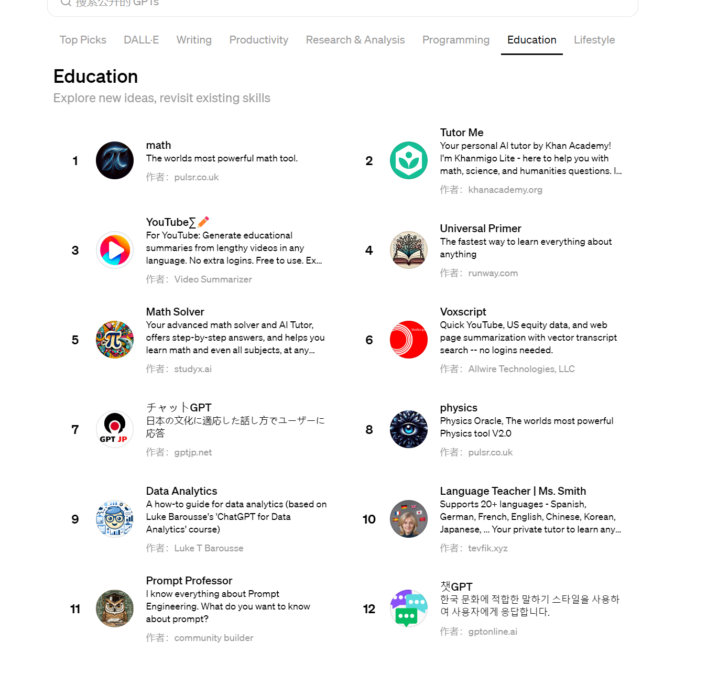
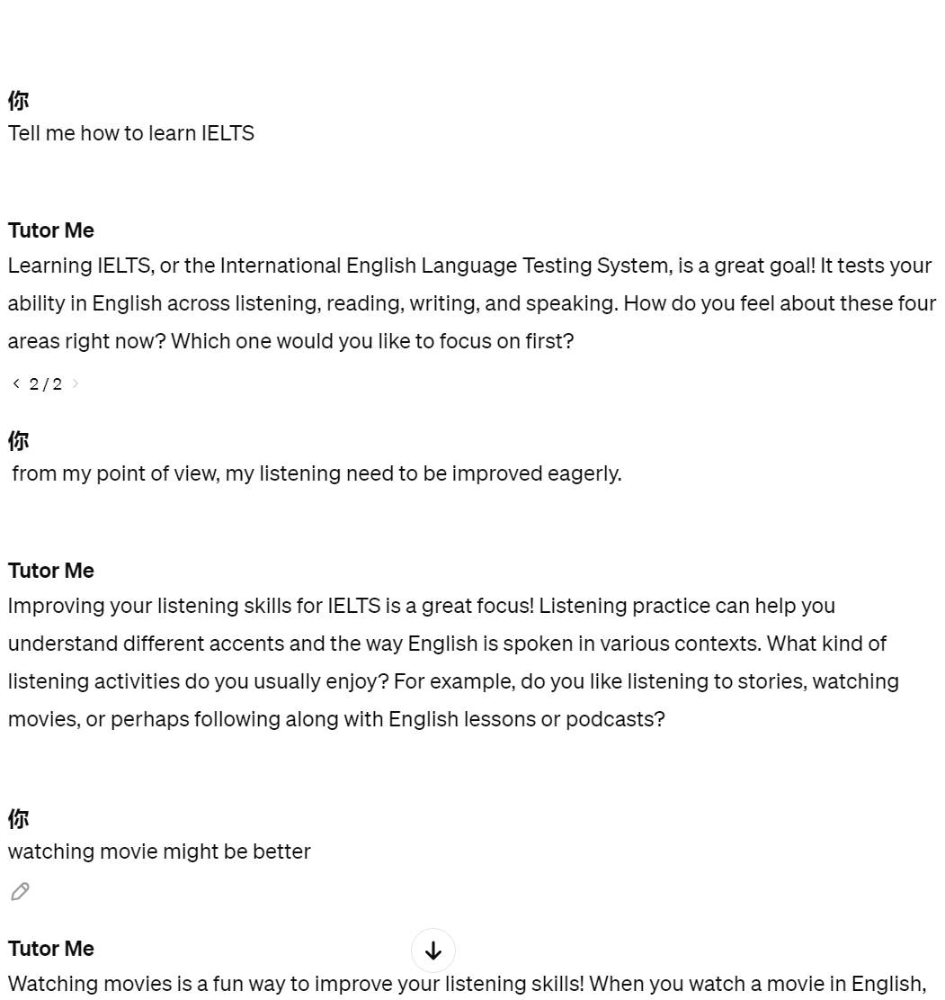
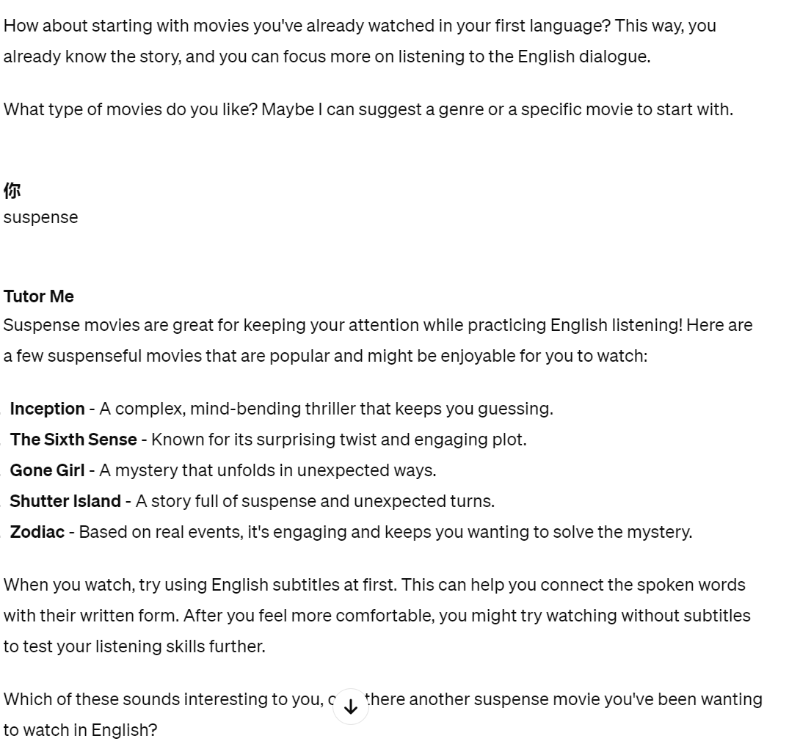
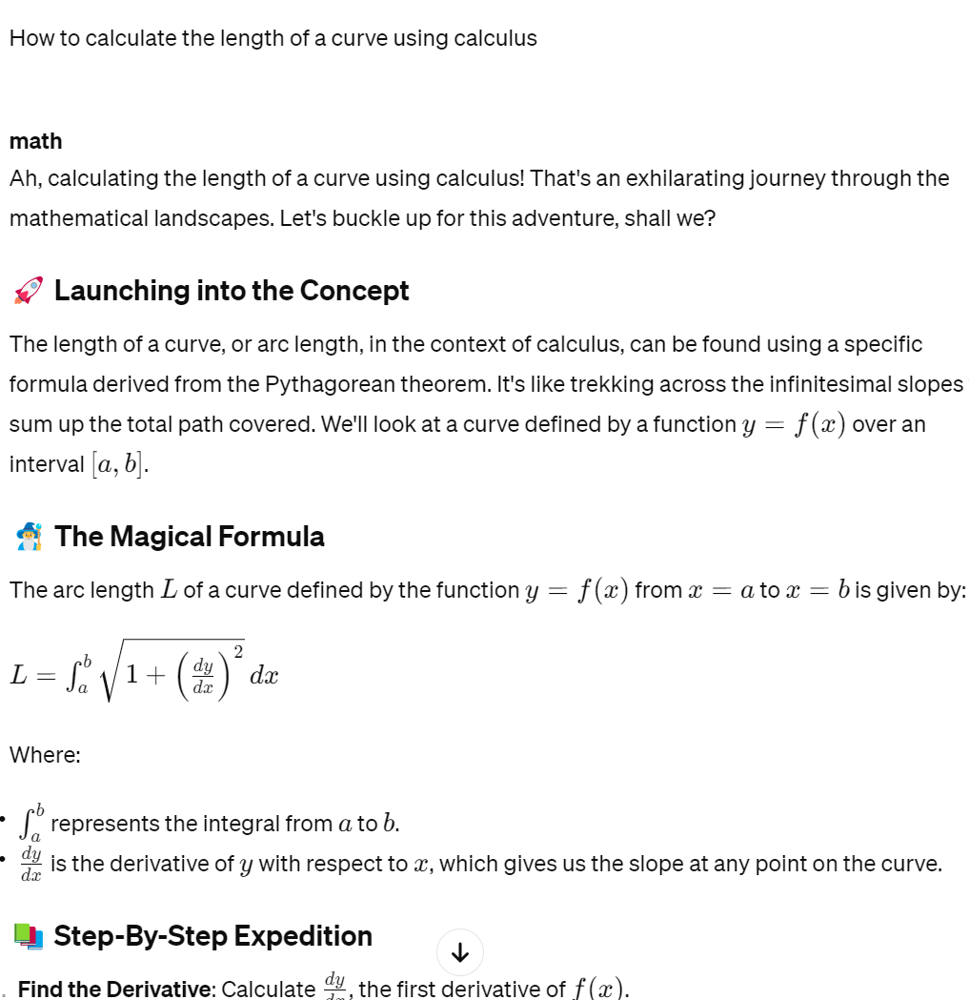
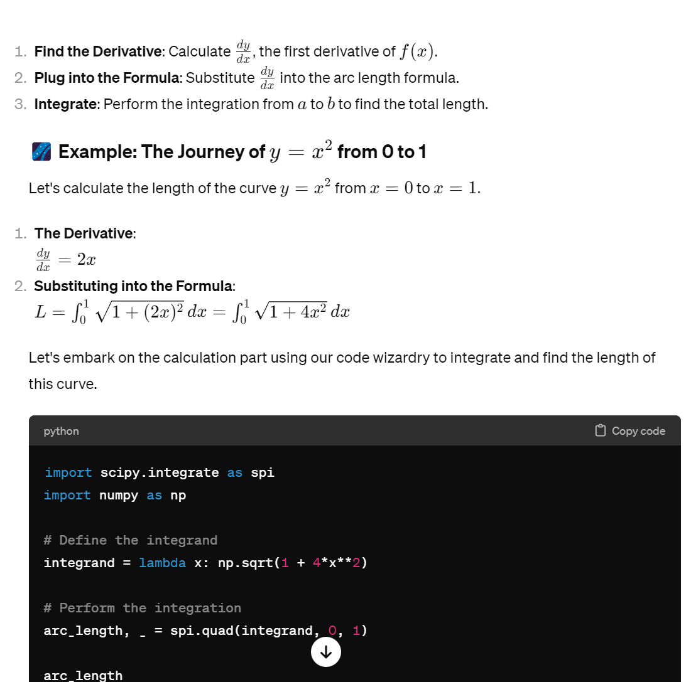
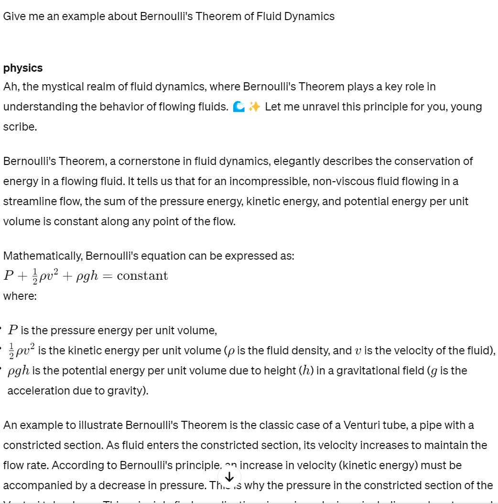

| Education | |||||||||
|---|---|---|---|---|---|---|---|---|---|
Education function of the ChatGPT is mainly reflected in academic part, includes:
Students can be more creative when doing their homework with educational application.
Since ChatGPT in this model will give some instructions instead of outputting answers directly.
it's more specific in the educational field to prevent students from directly copying without thinking.
And also, using its basic functions, users can check their own work whether it is correct or not.
In this case, students can understand where they made mistakes as soon as possible.
|
|
 (This screenshot is cut when author is using chatGPT, which is only for shown and not directly copy the generative information) |
|
 (This screenshot is cut when author is using chatGPT, which is only for shown and not directly copy the generative information) |
Tutor Me
Users can use this plug-in to learn the difficulties they usually encounter in daily life. |
|
In this case, ChatGPT asked for some details of your preferences about learning IELTS.
It won't output how to do directly, but ask your own situation about IELTS. And then, it will tell you how to learn IELTS further based on your preferences Using dialogue, it is better to tell you how to learn in the habit or the way you like, which is more practical and suitable for users. (In this case, users input the listening part and prefer to watch movies. It replied with recommended movies.) |
 Figure 3 (This screenshot is cut when author is using chatGPT, which is only for shown and not directly copy the generative information) |
|
  (This screenshot is cut when author is using chatGPT, which is only for shown and not directly copy the generative information) |
Math
If students encounter difficulties during the school math lessons, they can ask Math to tell them
how to solve it. |
PhysicsIf users have problems on physics conception or formulas, they can use this plug-in to understand it better. For example, if users are confused about the Bernoulli's fluid mechanics theorem (one of the important theorems in flowing fluids), Physics may help a lot. |
 Figure 6 (This screenshot is cut when author is using chatGPT, which is only for shown and not directly copy the generative information) |
The impact is mainly on the education industry and academic fields.
|
|
|
|
|
Math link (for Figure 4, 5) |
|
ChatGPT link (the index in Figure 1) |